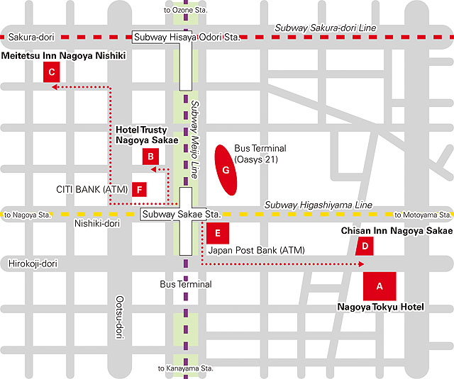

Accommodation
Rooms have been blocked for the participants of FPSAC’12 with special rates at the following hotels. These hotels are located in Sakae area, downtown Nagoya, and have easy access to Nagoya University by subway.
Bookings must be made through the online registration system at the time of conference registration for the special conference rate to apply. Accommodation will be arranged by Kinki Nippon Tourist. Reservations will be made on a first-come-first-serve basis. We recommend that you should book a hotel room early through the registration site in Registration
See also Payment, Confirmation, Changing/Cancellation Policy for Hotels given at the bottom of this page.
The rates in Japanese yen are quoted per room, per night and include breakfast, tax and service fee. High speed internet connection port is available in guest rooms.
A. Nagoya Tokyu Hotel
| 4-6-8 Sakae, Naka-ku, Nagoya 460-0008, Japan | |||||
| tel +81 (52) 251-2411 / fax +81 (52) 251-2422 | |||||
|
|||||
| web |
Nagoya Tokyu Hotel http://www.nagoya-h.tokyuhotels.co.jp/en/ |
||||
B. Hotel Trusty Nagoya Sakae
| 3-15-21 Nishiki, Naka-ku, Nagoya 460-0003, Japan | ||||||
| tel +81 (52) 968-5111 / fax +81 (52) 968-7311 | ||||||
|
||||||
| web |
Hotel Trusty Nagoya Sakae http://bit.ly/xXCY5e (shorten URL) |
|||||
C. Meitetsu Inn Nagoya Nishiki
| 3-3-22, Nishiki, Naka-ku, Nagoya 460-0003, Japan | |||||||
| tel +81 (52) 951-3434 / fax +81 (52) 951-3474 | |||||||
|
|||||||
| web |
Meitetsu Inn Nagoya Nishiki http://m-inn.com/en/hotel/nishiki.html |
||||||
D. Chisan Inn Nagoya Sakae
| 3-2, Shin-Sakaemachi, Naka-ku, Nagoya 460-0004, Japan | |||||||
| tel +81 (52) 962-2411 / fax +81 (52) 962-4598 | |||||||
|
|||||||
| web |
Chisan Inn Nagoya Sakae http://www.solarehotels.com/english/chisun/inn-nagoyasakae/guestroom/detail.html |
||||||
Bookings must be made through the online registration system at the time of conference registration for the special conference rate to apply. Reseravations are processed on a first-come-first-served basis.
Map

downloadfpsac12_hotel_map2.pdf (PDF/94KB)
Payment
Payment of accommodation charge should be made in Japanese Yen in advance only by credit card (VISA, Master Card, American Express, Diners Club or JCB only).
Confirmation
Kinki Nippon Tourist will email you a confirmation sheet after credit card settlement. Please be sure to bring the confirmation sheet when you check in at the hotel.
Changing/Cancellation Policy for Hotels
In case of changing your booking, please notify us at ngo-event [at sign] or.knt.co.jp as soon as possible.
In case of cancellation, you will be charged for cancellation fee unless you notify us at least 6 days prior to your check-in date (see below).
Your payment will be refunded after deducting cancellation charges.
| Up to 6 days before check-in date | No charge |
|---|---|
| 5 days to 2 days before check-in date | 20% of the total room charge |
| 1 day before check-in date | 50% of the total room charge |
| The day of check-in or No show | 100% of the total room charge |
Contact for Accommodations
Please direct questions and requests concerning accommodation to
FPSAC’12 Registration Desk
Event & Convention Branch, Nagoya
Kinki Nippon Tourist Co., Ltd.
email ngo-event [at sign] or.knt.co.jp
fax +81-52-563-1846
Mon. to Fri. 9:15 to 18:00 JST, except National Holidays
Please be aware of time differences between your time zone and ours.